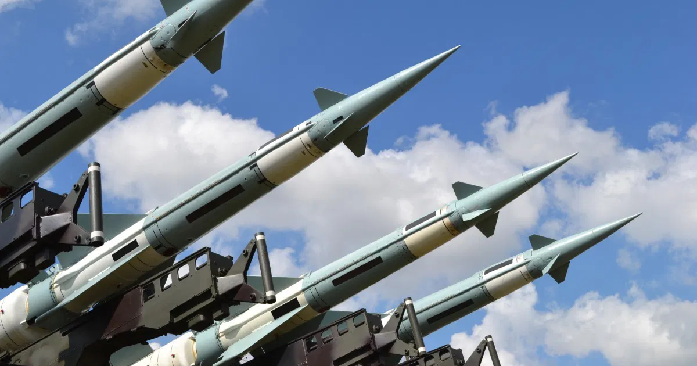
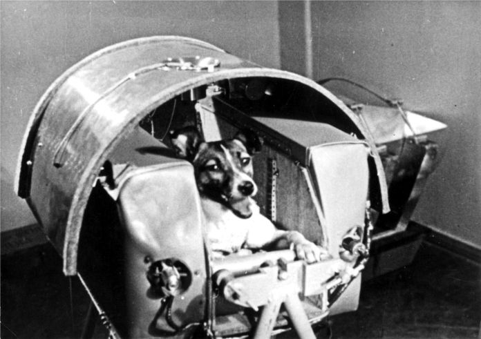
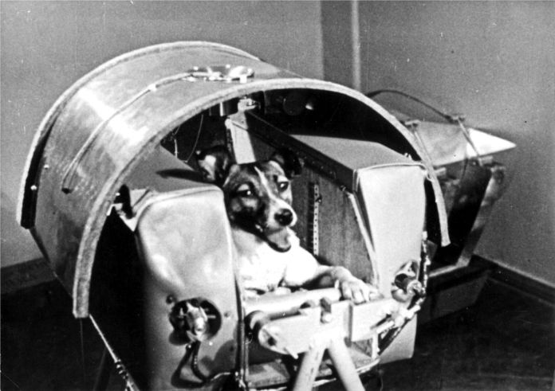

Corridas Armamentistas
A Corrida Armamentista é um fenômeno que caracteriza a competição entre países ou blocos para garantir armamento e investir em tecnologia militar, visando assegurar tanto segurança quanto poder bélico. O período retratado neste site corresponde ao ápice dessa corrida, impulsionada, sobretudo, pelos Estados Unidos e pela União Soviética para garantir segurança nacional e dominância global. Ambas as superpotências investiram massivamente no desenvolvimento e acúmulo de armamentos, concentrando esforços em armas nucleares e mísseis balísticos intercontinentais (ICBMs) como forma de dissuadir o adversário por meio da ameaça de retaliação em caso de ataque. Essa estratégia não apenas elevava o potencial destrutivo de cada lado, mas também gerava um clima de tensão constante, já que a percepção de vantagem militar era crucial para a manutenção do equilíbrio de poder. A União Soviética detonou sua primeira bomba atômica em 1949, poucos anos após os Estados Unidos terem utilizado armas nucleares em Hiroshima e Nagasaki. Em resposta a esses eventos, os EUA desenvolveram a bomba de hidrogênio, que foi testada com sucesso em 1952; logo depois, a URSS testou sua própria versão em 1953. Essa rápida escalada tecnológica culminou no teste da "Bomba Tsar" em 1961, considerada a arma nuclear mais potente já detonada, com uma estimativa de potência na ordem dos 50 megatons. Além do aperfeiçoamento das armas nucleares, ambos os países intensificaram o desenvolvimento de sistemas de entrega avançados, como os ICBMs e os mísseis lançados de submarinos (SLBMs), que ampliaram significativamente a capacidade de destruição mútua. Essa evolução tecnológica permitiu que cada superpotência alcançasse uma posição de equilíbrio, baseada na doutrina da "Destruição Mútua Assegurada" (MAD). Nesse contexto, qualquer ataque nuclear causaria a aniquilação de ambas as partes, servindo como um poderoso mecanismo de dissuasão.

Corrida Espacial
Assim como a Corrida Armamentista, a Corrida Espacial destacou-se como uma das manifestações mais emblemáticas da rivalidade entre Estados Unidos e União Soviética. Essa disputa transcendeu o campo militar, estendendo-se à ciência, tecnologia e propaganda ideológica. Ambas as superpotências buscavam demonstrar superioridade tecnológica e científica, utilizando a conquista do espaço como símbolo de progresso e influência global. Em 1957, a URSS lançou o Sputnik 1, o primeiro satélite artificial da história, marcando o início oficial da Corrida Espacial e colocando os soviéticos em vantagem. Ainda em 1957, a cadela Laika tornou-se o primeiro ser vivo a orbitar a Terra, a bordo do Sputnik 2, embora tenha morrido poucas horas após o lançamento. Esses feitos tiveram enorme impacto mundial e simbolizaram o avanço soviético na exploração espacial. Nos anos seguintes, a União Soviética continuou a realizar testes importantes, lançando os satélites Sputnik 4 e Sputnik 5. O Sputnik 4 foi uma missão não tripulada que testou sistemas para futuras viagens espaciais humanas, enquanto o Sputnik 5 levou dois cães ao espaço e os trouxe de volta com vida, provando que o retorno seguro de seres vivos era possível. Em resposta, os Estados Unidos criaram a NASA em 1958 e lançaram o Explorer 1, seu primeiro satélite, marcando o início da recuperação americana. Mas em 1961, a URSS novamente saiu na frente com Yuri Gagarin, o primeiro ser humano a viajar pelo espaço, a bordo da nave Vostok 1, completando uma órbita ao redor da Terra. Determinados a superar os soviéticos, os Estados Unidos lançaram o ambicioso Programa Apollo. O ápice foi alcançado em 20 de julho de 1969, quando os astronautas Neil Armstrong e Buzz Aldrin pousaram na Lua durante a missão Apollo 11. O feito foi transmitido ao vivo para milhões de pessoas e consolidou a supremacia americana na corrida espacial.
 
